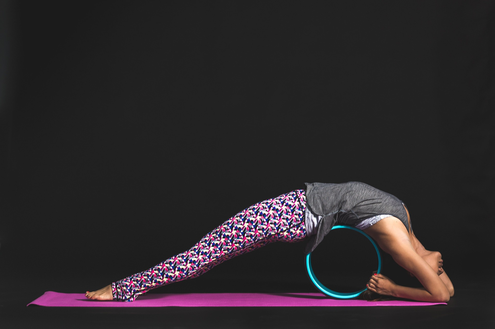

NOS COURS
YOGA BIEN-ÊTRE
Vous vous sentez débordé, dispersé, stressé ? Cette classe vous aidera à combattre les tensions musculaires, à calmer votre mental et à créer un sentiment d’espace en vous. À l’aide de postures accessibles à tous, de techniques de respiration simples et d’accessoires comme les coussins, les sangles et les chaises, vous retrouverez rapidement un sentiment profond et durable de mieux- être. Il s’agit d’un yoga restaurateur.

YOGA ANTI-FATIGUE
Ce cours accessible à tous est conçu spécifiquement pour déloger les tensions physiques, libérer l'énergie stagnante et apaiser les fluctuations du mental. Au programme : étirements en douceur, postures de stabilisation, postures régénératrices, respiration purifiante, méditation et relaxation.

YOGA YIN
Un cours de yoga à la fois énergisant et profondément régénérateur qui vient équilibrer un style de vie et une classe de yoga plutôt active (yoga yang). Le yoga yin se pratique au sol et permet de solliciter la participation des 6 méridiens du corps et de leurs tissus conjonctifs en conservant les postures plus longuement. Pratique orchestrée avec la respiration et une approche plus méditative. Ouvert à tous les niveaux de pratique. (excellente classe pour l'ouverture des hanches et la région pelvienne).
YOGA DÉTENTE
Ce cours s’adresse à tous ceux et celles qui désirent s’offrir un moment de calme, de paix et de sérénité. Vous y explorerez les bienfaits de la relaxation profonde à travers une série d’échauffements suivis de postures de yoga travaillées majoritairement au sol, supportées par de gros coussins, des couvertures et des sangles afin de favoriser l’ouverture et la détente du corps tout entier. Notre pratique sera orchestrée autour de respirations apaisantes , relaxations et méditations guidées.

YOGA TONUS ET VITALITÉ
Idéal pour solidifier la sangle abdominale, le centre de gravité de notre corps, améliorer notre maintien et tonifier notre silhouette. Ce programme de remise en forme renforcera votre dos dans le respect de vos limites. Il améliore la concentration, aide à approfondir la respiration tout en apaisant les fluctuations du mental. Les postures sont adaptées en fonction des capacités des participants. Une connaissance des postures de base en yoga est fortement suggérée. Ouvert à tous les niveaux.

YOGA QI GONG
Qi Gong (prononcé Chi Kung) signifie travail de l'énergie. Cette discipline ancestrale cumule ses bienfaits à deux autres pratiques énergétiques : le yoga et la méditation. Les mouvements doux, fluides et pratiqués surtout en position debout, réénergisent le corps et apaisent l'esprit. (pour tous les niveaux de pratique).